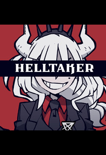

Bem-vindo ao Helltaker Wiki!
O arquivo número um do conteúdo oficial do Helltaker.
Você acordou um dia com um sonho: um harém cheio de garotas demônios. Você abriu o portal na esperança de realizar seus desejos mais selvagens. Hellfire queima seus pulmões, a morte espera em cada esquina e tudo parece de um jogo para celular bonitinho. Você está no inferno.
Você acordou um dia com um sonho: um harém cheio de garotas demônios. Você abriu o portal na esperança de realizar seus desejos mais selvagens. Hellfire queima seus pulmões, a morte espera em cada esquina e tudo parece de um jogo para celular bonitinho. Você está no inferno.
| Capítulos | Personagens |
| Capítulo I | Pandemônica , o demônio cansado |
| Capítulo II | Modeus , o demônio luxurioso |
| Capítulo III | Cerberus , o Demônio Triplo |
| Capítulo IV | Malina, o demônio azedo |
| Capítulo V | Zdrada , a vadia do demônio |
| Capítulo VI | Azazel , o anjo curios | o
| Capítulo VII | Justiça , o demônio incrível |
| Capítulo VIII | Lúcifer , o CEO do Inferno |
| Capítulo IX | Julgamento , o Alto Promotor |
| Capítulo X | Epílogo. Belzebu ,a grande mosca |
| Capítulo EX | Loremaster , The Science Demon ( Examtaker ) |